Префектура Хёго · Каннабэ и Ябу · отели и природа
Плато Каннабэ и Ябу: два отеля Fairfield by Marriott и что делать вокруг них
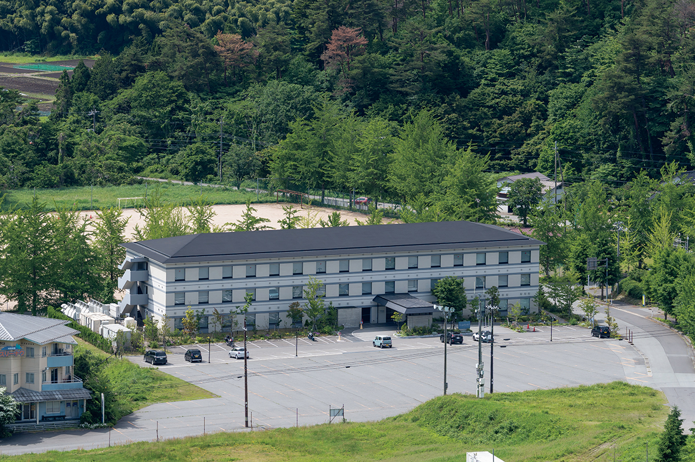
Каннабэ и Ябу лежат среди гор на севере префектуры Хёго, и для любителей природы здесь хватит дел на несколько дней. Удобнее всего путешествовать от отеля к отелю: в этих местах работают два Fairfield by Marriott, и оба стоят рядом с придорожными станциями.
Отель
Плато Каннабэ: отель у подножия вулкана
Для активного отдыха на природе трудно придумать базу удобнее, чем отели Fairfield by Marriott при придорожных станциях. В 2026 году по Японии их было 29, и ни в одном нет ресторана или большой общей бани: здесь только ночуют. Зато каждый стоит рядом с мити-но эки, придорожной станцией с магазином местных продуктов. Днём гости уезжают на прогулки и экскурсии, обедают в местных ресторанах, заглядывают на станцию за фермерскими продуктами, а вечером возвращаются отдыхать.
Оба отеля из этой истории находятся в Тадзиме, старой области на севере префектуры Хёго. Большую часть её территории занимают горы и леса. В конце XVI века эти земли подчинил Хидэнага Тоётоми (1540–1591), полководец и младший брат объединителя Японии: он завоевал Тадзиму в походах 1577–1580 годов.
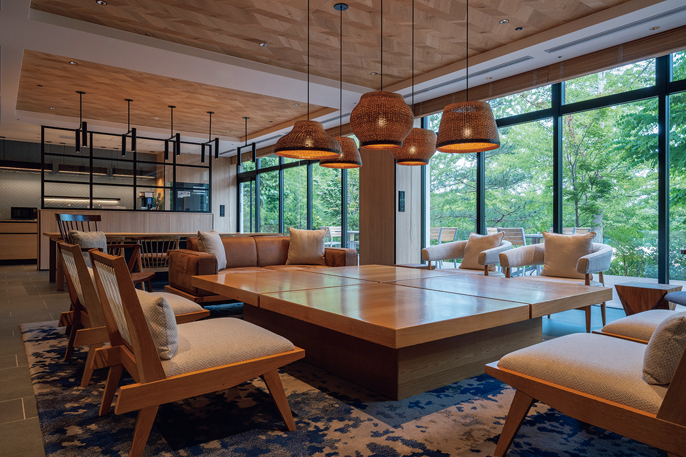
Первая остановка: Fairfield by Marriott Hyogo Kannabe Highland на плато Каннабэ. Плато знают как курорт на все сезоны: зимой сюда едут кататься на лыжах, летом ходить в походы и летать на параплане.
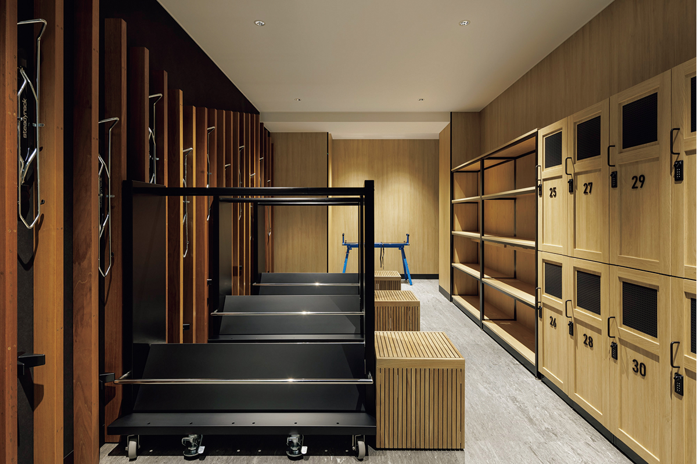
Отель стоит у подножия горы Каннабэ, откуда удобно добираться до любых развлечений. Лыжи, сноуборды и велосипеды не нужно тащить в номер: для них есть отдельные спортивные шкафчики. Близко и до известных мест вроде онсэна Киносаки, так что отель подходит как база почти для любого маршрута.
После целого дня на воздухе приятно посидеть в просторной общей гостиной или отдохнуть в номере. Номера небольшие, но продуманные и удобные. Набраться сил среди гор и лесов: вот и весь рецепт необычных выходных.
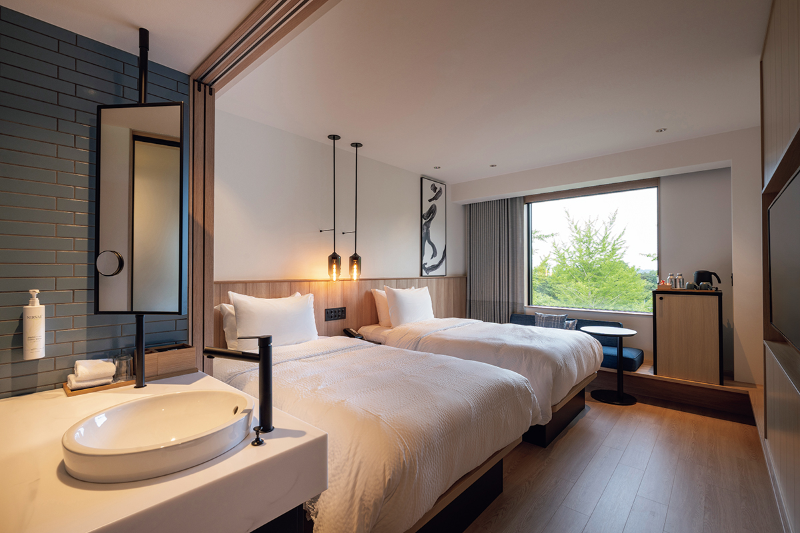
Fairfield by Marriott Hyogo Kannabe Highland
- Адрес
- префектура Хёго, Тоёока, Хидака, Курусуно, 59-30
- Телефон
- +81 796-45-0200
- Номера
- 73
- Цены / Вход
- от 15 730 иен за номер за ночь с налогом и сервисным сбором
- Заезд / выезд
- 15:00 / 11:00
- Как добраться
- на машине около 15 минут от развязки Хидака-Каннабэ-Когэн скоростной дороги Кита-Кинки-Тоёока или около 20 минут от станции Эбара; на автобусе «Дзэнтан» до остановки «Каннабэ Онсэн Ютороги-маэ», оттуда около 2 минут пешком
- Сайт
- marriott.com
Онсэн
Придорожная станция «Каннабэ-Когэн»
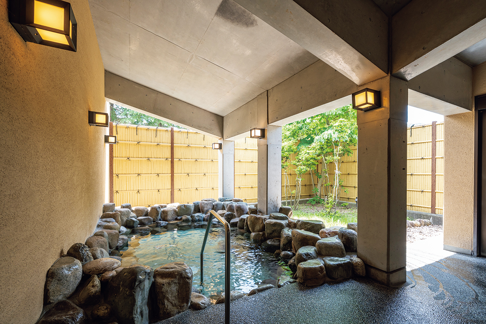
Вечером стоит дойти до соседней придорожной станции. В июне 2026 года здесь обновили магазин с фермерским рынком «Фурэаи фаму»: новые прилавки, новая планировка и светлый зал, где удобно выбирать местные овощи и деревенские продукты. При станции работает просторный и светлый онсэн «Каннабэ Онсэн Ютороги», так что после прогулок можно смыть пыль и как следует отогреться.
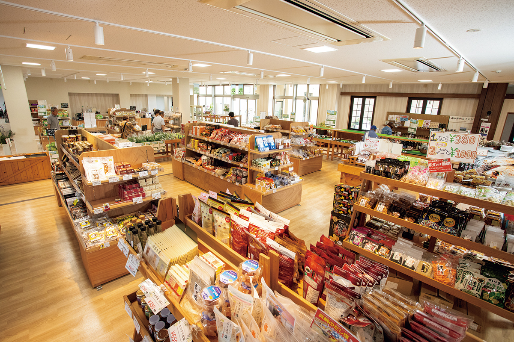
Придорожная станция «Каннабэ-Когэн»
- Адрес
- префектура Хёго, Тоёока, Хидака, Курусуно, 59-13
- Телефон
- +81 796-45-1331 (магазин, рынок, ресторан), +81 796-45-1515 (онсэн)
- Часы работы
- магазин и рынок 9:00–17:00 (в субботу, воскресенье и праздники до 17:30); ресторан 11:00–16:00 (в субботу, воскресенье и праздники 10:00–16:30, последний заказ за 30 минут до закрытия); онсэн 13:00–21:00 (в субботу, воскресенье и праздники с 12:00)
- Выходные
- у магазина и рынка нет выходных; ресторан был закрыт до 31 июля 2026 года, о режиме после этого нужно узнавать; онсэн закрыт по средам (если среда праздничная, то на следующий день)
Вулкан
Гора Каннабэ: геопарк под ногами
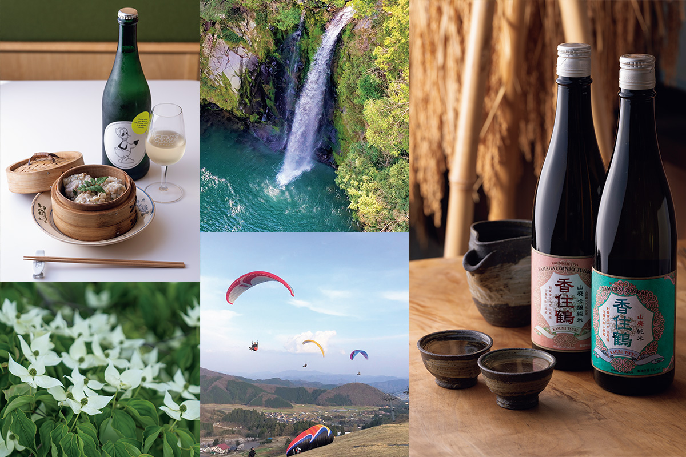
Плато Каннабэ лежит на высоте около 350 метров, и даже летом здесь не жарко. Оно входит в геопарк «Побережье Санъин», признанный ЮНЕСКО, и его главный символ это гора Каннабэ. Вулкан извергался, по оценкам, около 25 000 лет назад, и это самый молодой вулкан региона Кинки, куда входят Осака, Киото и Хёго. Высота горы 469 метров, но от начала тропы до вершины всего 119 метров подъёма, и дорога занимает от 30 минут до часа. Гора сложена из выброшенных вулканом камней, а на вершине открывается кратер в форме чаши.
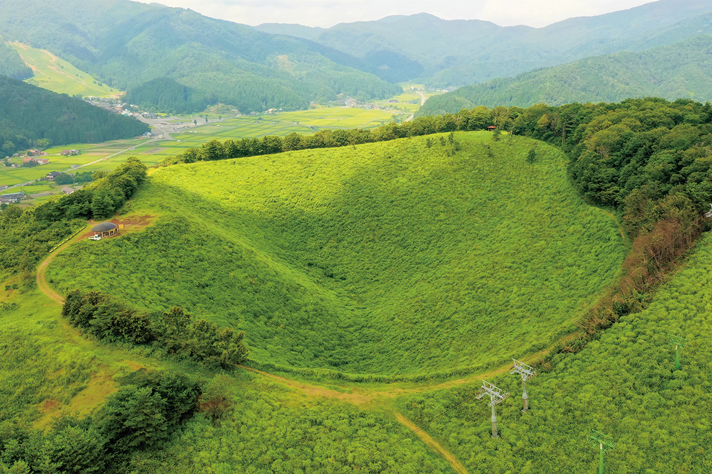
Стоит посмотреть и на «ветровые пещеры», ходы, по которым когда-то выходили лава и газы. Весной и осенью ранним утром, если повезёт с погодой, плато затягивает море облаков.
В первый раз лучше подняться на гору с гидом: по дороге он расскажет, как образовался вулкан и что здесь растёт, а идти можно без спешки. Каннабэ к тому же считают одним из главных мест для параплана в Японии, и полетать над долиной могут и новички.
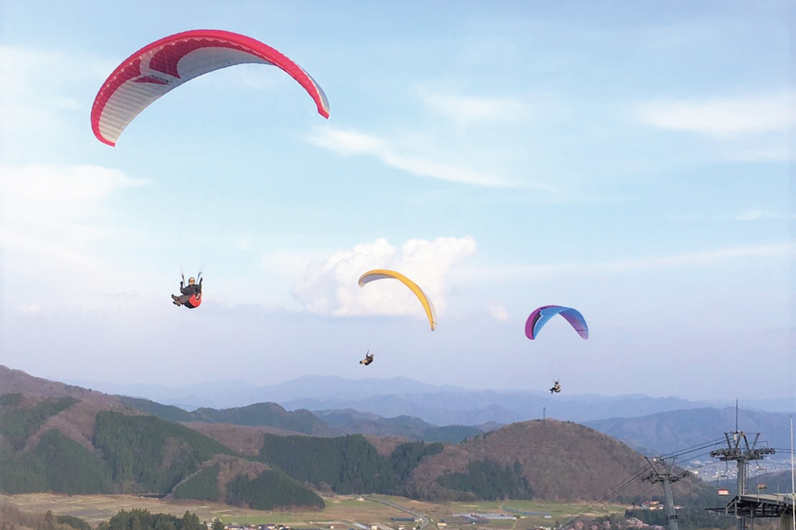
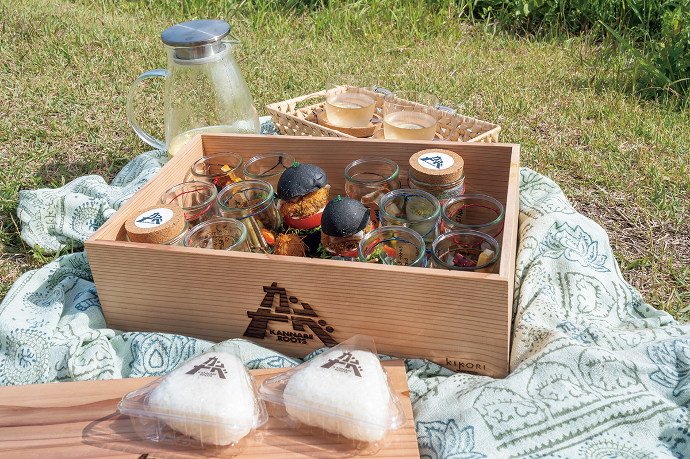
Поход на гору Каннабэ и полёты на параплане
- Телефон
- +81 796-45-1331 (поход с гидом, турбюро при придорожной станции «Каннабэ-Когэн»), +81 796-45-0598 (параплан, школа «Алекс Джапан»)
- Сайт
- toyooka-tourism.com (поход), eonet.ne.jp/~alexjapan (параплан)
Треккинг
Водопад Хаттан и прогулка по застывшей лаве
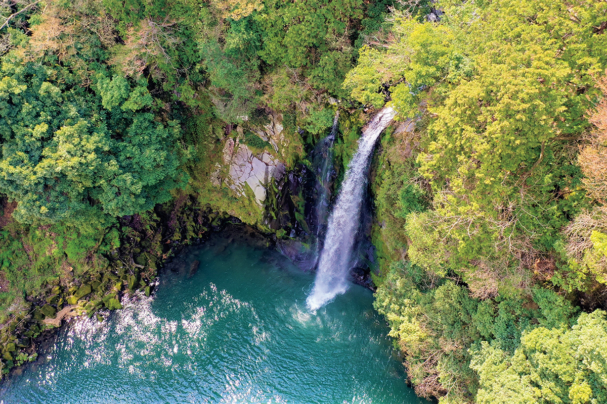
Лава, стекавшая с вулкана, застыла, а потом вода веками точила её, и на плато появилось множество водопадов и омутов. Название водопада Хаттан означает «восемь танов»: таном в Японии мерили рулон ткани, и водопад сравнивают с полотном длиной в восемь рулонов. Высота падения достигает 25 метров, это самый большой водопад в бассейне реки Инаба, а вода в его чаше светится изумрудным цветом.
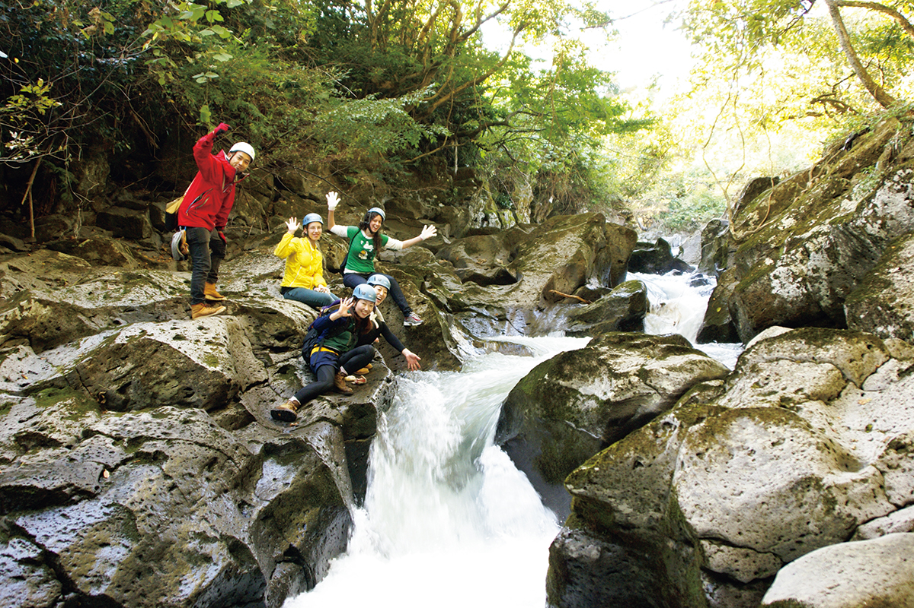
По этим местам водят треккинг, и мы рекомендуем попробовать. Маршрут похож на природную полосу препятствий: подходишь к водопаду так близко, что долетают брызги, а дальше пробираешься, цепляясь за камни. На «Лавовом треккинге» опытный гид подбирает маршрут под группу и показывает водопады и омуты вдоль реки. Идти приходится всем телом, и в этом главное удовольствие.
«Вся здешняя лава это базальт, у него нет острых краёв, поэтому треккинг безопасный. А в тёплое время можно заходить прямо в реку, это очень приятно»
гид «Лавового треккинга»
Водопад Хаттан и «Лавовый треккинг»
- Адрес
- префектура Хёго, Тоёока, Хидака, Насики, 85-61 (водопад)
- Телефон
- +81 796-20-3541 (треккинг, природная школа «Каннабэ Сидзэн Гакко»)
- Сайт
- kns.hyogo.jp
Сакэ
«Касумицуру»: сакэ к местной кухне
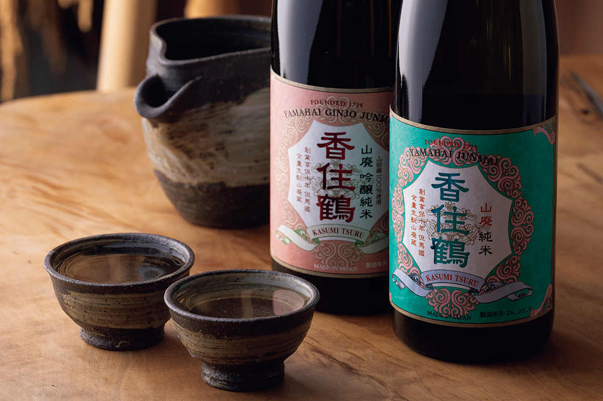
Из Каннабэ стоит съездить за местным сакэ в подарок. В горах у города Касуми, недалеко от Японского моря, работает старая винокурня «Касумицуру», и её сакэ веками подстраивалось под здешний климат и кухню.
Винокурню основали в 1725 году. Здесь хранят приёмы мастеров тадзима-тодзи, одной из четырёх великих школ японских пивоваров сакэ, и всё сакэ делают старинными способами кимото и ямахай. Цель простая: сакэ должно подходить к местной еде и прежде всего к крабу мацуба-гани. «Касумицуру» остаётся главной маркой этих мест: 60% сакэ продают в самой Тадзиме, а 70–80% в пределах префектуры.
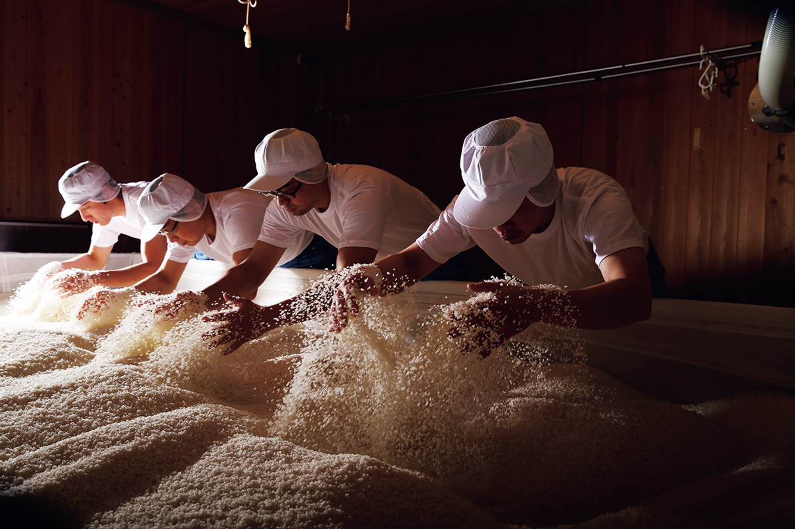
Винокурня «Касумицуру»
- Адрес
- префектура Хёго, уезд Миката, Ками, Касуми, Охара, 600-2
- Телефон
- +81 796-39-2910
- Часы работы
- 9:30–16:30
- Выходные
- 1 января, бывают внеплановые выходные
- Сайт
- kasumitsuru.jp
Ябу
Второй отель: в получасе от Каннабэ
В 30 минутах на машине от Каннабэ лежит город Ябу, и его тоже нельзя пропустить, если вы приехали в Тадзиму. Переезд из отеля в отель делает поездку только интереснее. Из Fairfield by Marriott Hyogo Tajima Yabu удобно отправляться за главным богатством Ябу, его едой: продуктов здесь столько, что есть местное давно стало нормой.
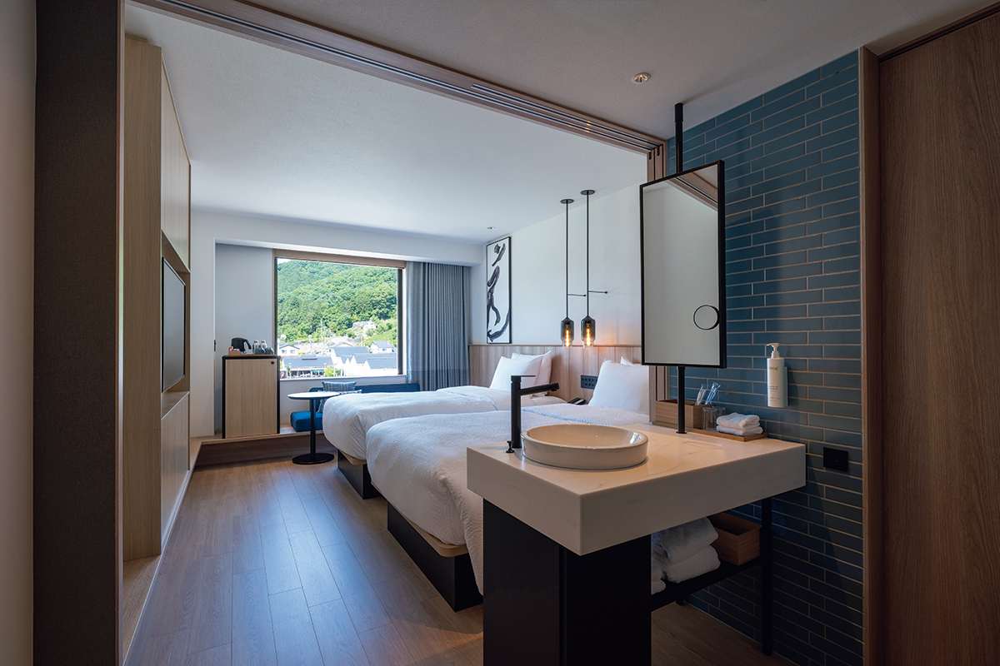
Отель окружён горами и полями: рядом гора Хёносэн, которую зовут крышей Хёго, и рисовые террасы Бэку. Земледелие здесь главное занятие, и отель вместе с местными жителями устраивает посевы и сбор урожая, на которых можно познакомиться с соседями и почувствовать характер этих мест. На завтрак ждёт коробка с салатом из свежих овощей Тадзимы и куриной ветчиной из местной курицы «Тадзима-дори».
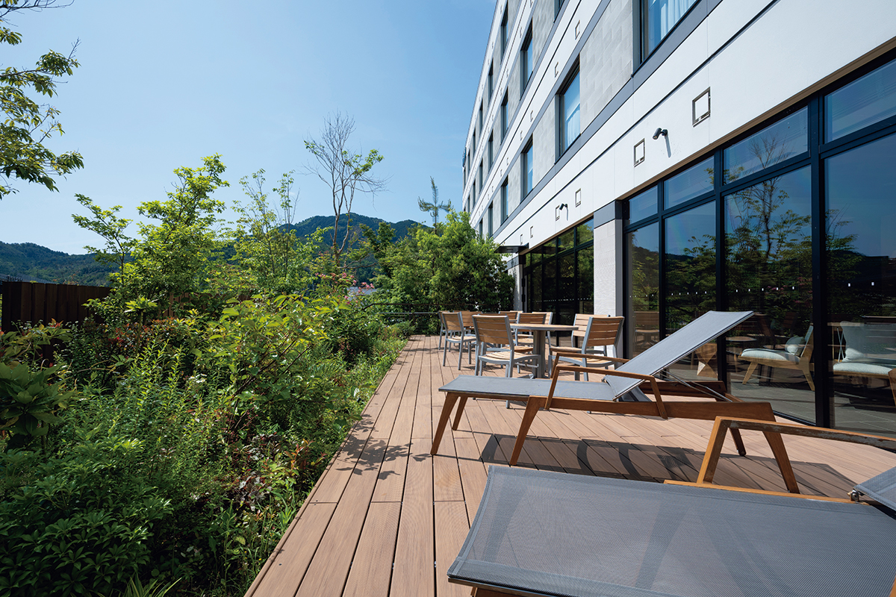
Fairfield by Marriott Hyogo Tajima Yabu
- Адрес
- префектура Хёго, Ябу, Ёка, Такаянаги, 168-1
- Телефон
- +81 79-666-8645
- Сайт
- marriott.co.jp
Ресторан
«Танигаки»: продукты Ябу в паре с вином
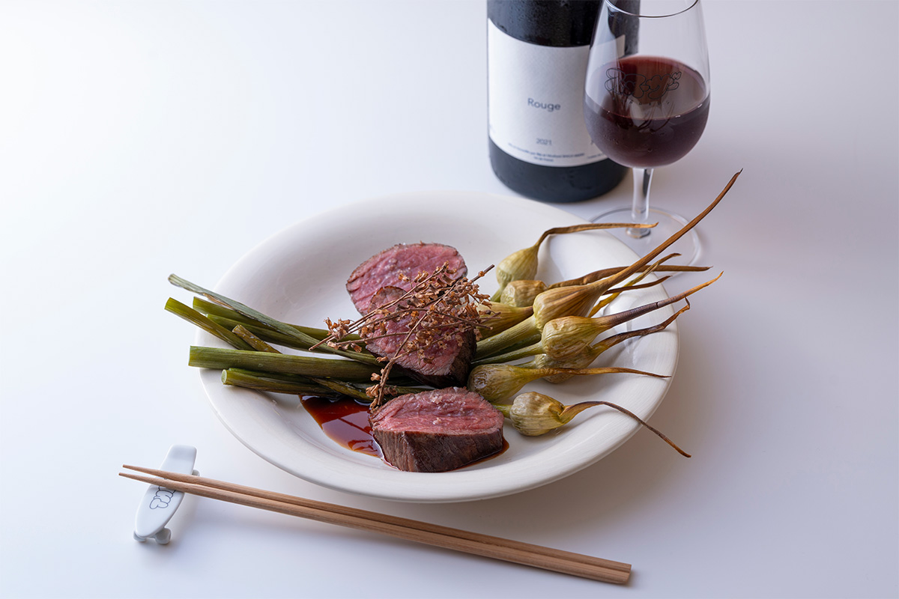
В популярном ресторане «Танигаки» за соседними столиками сидят местные завсегдатаи и путешественники. Меню не привязано к одной кухне, и в нём много блюд из местных марок мяса: говядины «Тадзима-уси» и свинины «Ёка-бута». Шеф держал ресторан с тем же названием в Токио, а потом вернулся в родной Ябу. Здесь он готовит то, что можно сделать только в этих местах: например, соединяет свинину «Ёка-бута» с местным перцем асакура-сансё.
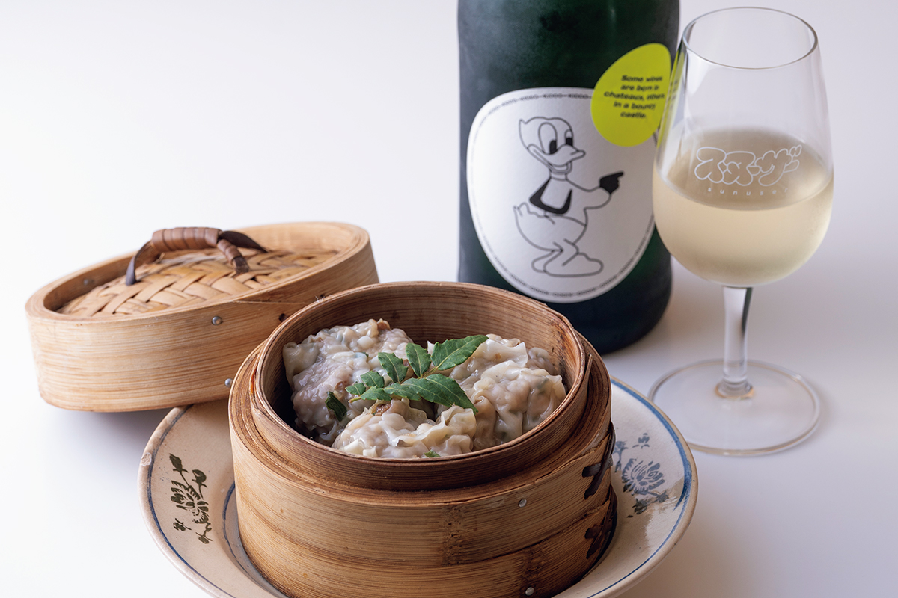
Блюда здесь выходят за рамки французской или китайской кухни, у них яркий вкус продукта, и к ним хорошо идёт простое и честное натуральное вино.
«Я хочу готовить блюда, которые возможны только в Ябу, благодаря связи с местными производителями»
шеф ресторана «Танигаки»
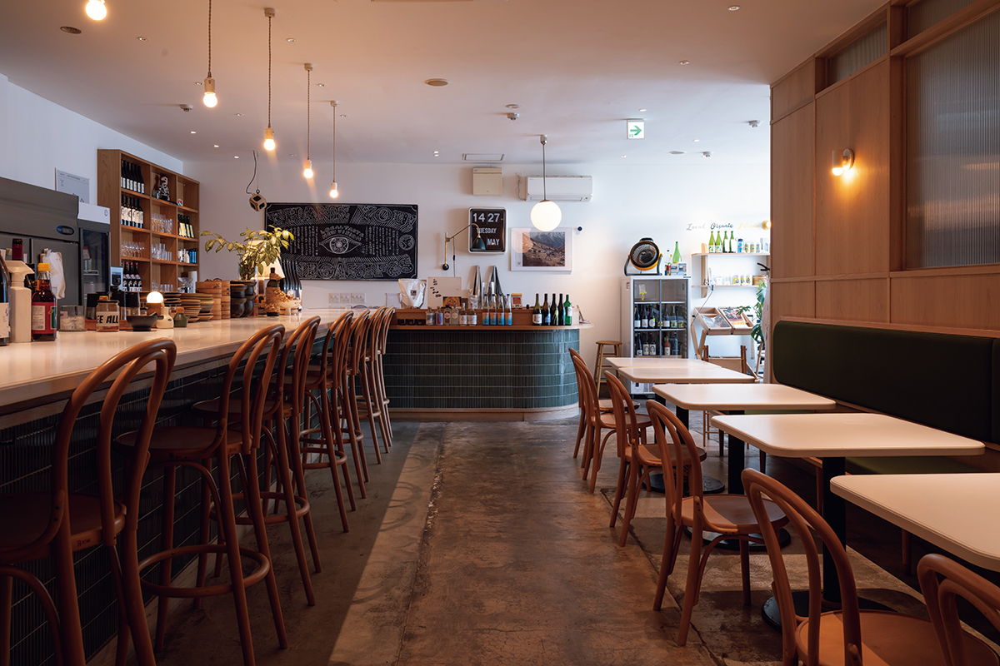
Ресторан «Танигаки»
- Адрес
- префектура Хёго, Ябу, Ёка, Ёка, 1645-1
- Телефон
- +81 79-662-2946
- Часы работы
- 11:30–15:00 (последний заказ 14:30), 17:30–22:00 (последний заказ 21:00)
- Выходные
- воскресенье, понедельник
Шоколад
«Ле Флёв»: ремесленный шоколад в подарок
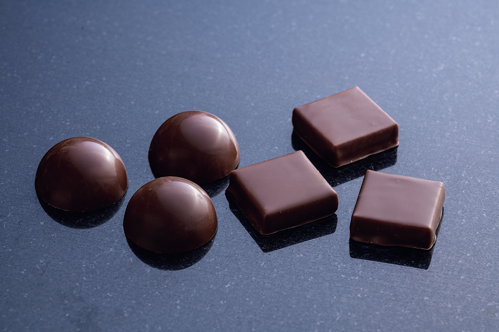
Кондитерская «Ле Флёв» привлекает внимание по всей Японии качеством и вкусом. Основа её ассортимента местные продукты, в том числе мёд с собственной пасеки, а самой известной работой считают конфеты с сакэ. Для них берут редкое местное сакэ, которое около полугода выдерживают в штольнях бывшего рудника Акэнобэ в том же районе Оя, где стоит мастерская. Конфеты тают во рту и оставляют фруктовый аромат. Шоколад здесь придумывают от продукта, у конфет много наград, а часть шоколада делают сами из какао-бобов честной торговли. Заказ можно забрать прямо в мастерской, если договориться заранее.
Кондитерская «Ле Флёв»
- Адрес
- префектура Хёго, Ябу, Оя, Курагаки, 947
- Часы работы
- только по предварительной записи
- Выходные
- без выходных
Перед заездом
Придорожная станция «Ёка Тадзимагура»
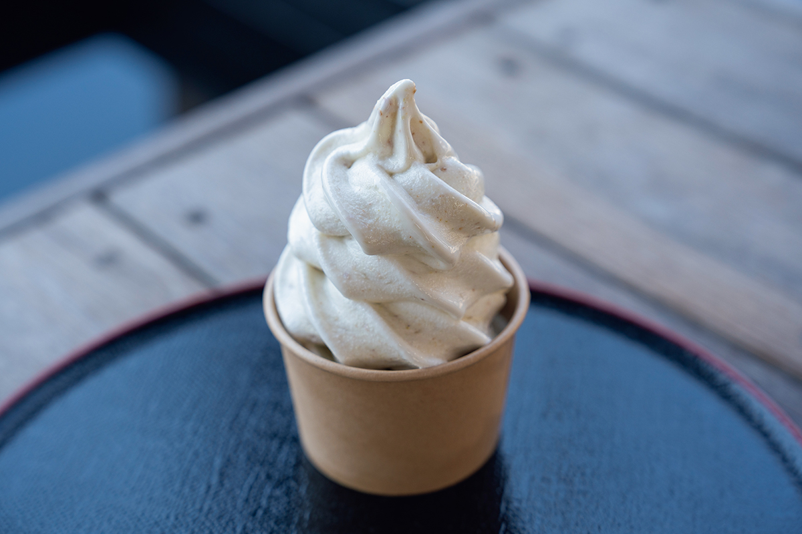
Прямо напротив Fairfield by Marriott Hyogo Tajima Yabu стоит придорожная станция, и на ней собрано всё, чем гордится округа. Здесь есть овощной рынок, сувенирная лавка, столовая и ванночки для ног. Обязательно попробуйте мягкое мороженое, щедро сдобренное местным перцем асакура-сансё: цитрусовая свежесть сансё и хрустящая шоколадная крошка не отпускают до последней ложки.
Путешествие по Тадзиме, от природы до еды, каждый раз приносит открытия, и все пять чувств здесь работают в полную силу.
Придорожная станция «Ёка Тадзимагура»
- Адрес
- префектура Хёго, Ябу, Ёка, Такаянаги, 241-1
- Телефон
- +81 79-662-3200
- Часы работы
- магазин 9:00–17:30 (в субботу, воскресенье и праздники до 19:00); еда навынос 9:00–17:15 (в субботу, воскресенье и праздники 9:00–17:30); ресторан 11:00–15:00 (в субботу, воскресенье и праздники до 18:30)
- Выходные
- без выходных
Фото: Садахо Найто.